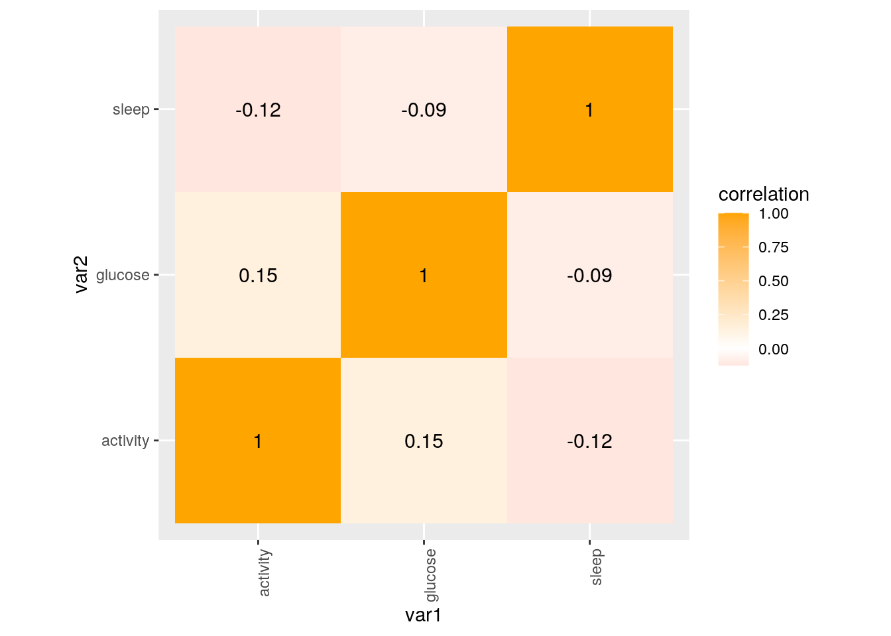
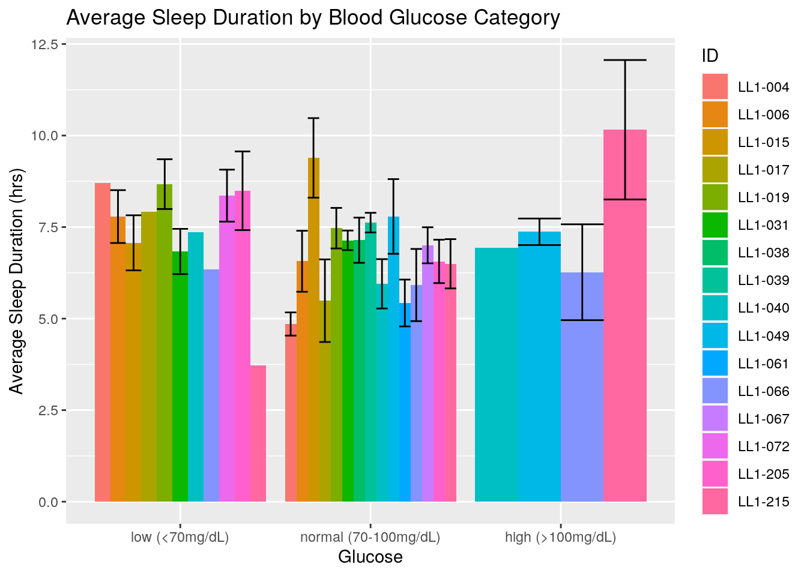
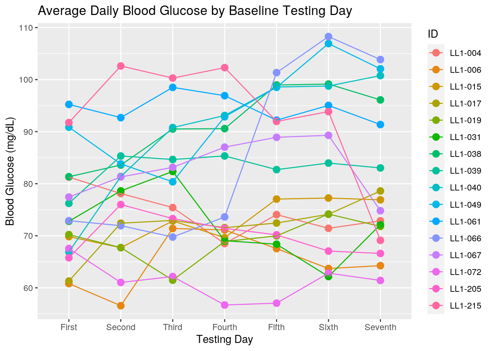
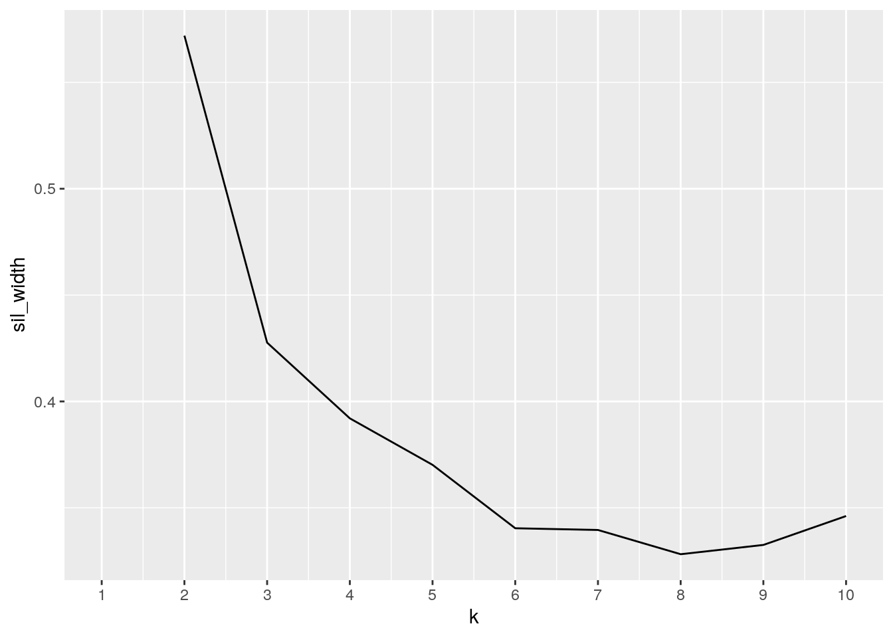
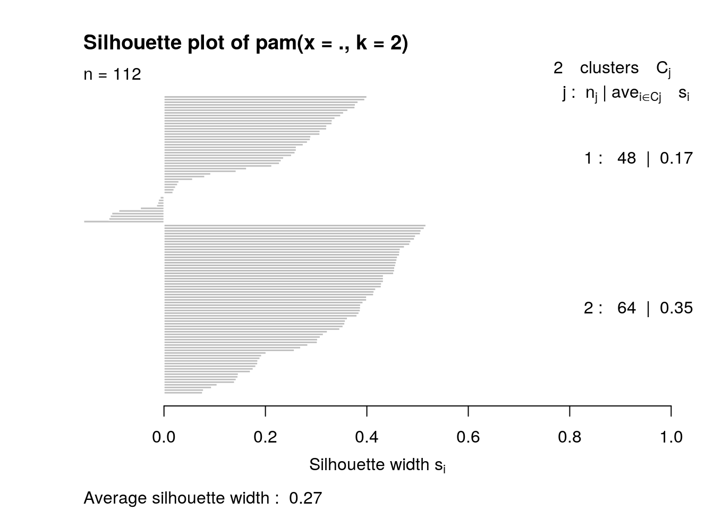

## paste this chunk into the ```{r setup} chunk at the top of
## your project 1 .Rmd file
knitr::opts_chunk$set(echo = TRUE, eval = TRUE, fig.align = "center",
warning = F, message = F, tidy = TRUE, tidy.opts = list(width.cutoff = 60),
R.options = list(max.print = 100))library(dplyr)
library(ggplot2)
library(tidyverse)
library(readxl)
library(cluster)
library(readxl)
glucose <- read_excel("dailybg.xlsx")
glimpse(glucose)## Rows: 112
## Columns: 5
## $ ID <chr> "LL1-004", "LL1-004", "LL1-004", "LL1-004", "LL1-…
## $ `Start Date` <dttm> 2019-10-17, 2019-10-18, 2019-10-19, 2019-10-20, …
## $ `Start Day` <chr> "Thu", "Fri", "Sat", "Sun", "Mon", "Tue", "Wed", …
## $ Day <dbl> 1, 2, 3, 4, 5, 6, 7, 1, 2, 3, 4, 5, 6, 7, 1, 2, 3…
## $ `Avg Blood Glucose` <dbl> 81.27083, 78.11458, 75.41667, 68.50000, 74.06250,…sleep <- read_excel("sleepduration.xlsx")
glimpse(sleep)## Rows: 112
## Columns: 5
## $ ID <chr> "LL1-004", "LL1-004", "LL1-004", "LL1-004", "LL1-004…
## $ `Start Date` <dttm> 2019-10-17, 2019-10-18, 2019-10-19, 2019-10-20, 201…
## $ `Start Day` <chr> "Thu", "Fri", "Sat", "Sun", "Mon", "Tue", "Wed", "Fr…
## $ Day <dbl> 1, 2, 3, 4, 5, 6, 7, 1, 2, 3, 4, 5, 6, 7, 1, 2, 3, 4…
## $ `Sleep Duration` <dbl> 262.5, 367.0, 299.5, 522.5, 251.0, 318.5, 248.5, 327…activity <- read_excel("dailyactivity.xlsx")
glimpse(activity)## Rows: 112
## Columns: 5
## $ ID <chr> "LL1-004", "LL1-004", "LL1-004", "LL1-004", "LL1-004", "…
## $ `Start Date` <dttm> 2019-10-17, 2019-10-18, 2019-10-19, 2019-10-20, 2019-10…
## $ `Start Day` <chr> "Thu", "Fri", "Sat", "Sun", "Mon", "Tue", "Wed", "Fri", …
## $ Day <dbl> 1, 2, 3, 4, 5, 6, 7, 1, 2, 3, 4, 5, 6, 7, 1, 2, 3, 4, 5,…
## $ activity <dbl> 1097.0, 1053.5, 1163.0, 975.0, 1145.0, 1162.0, 1076.5, 1…join <- inner_join(sleep, glucose)
data <- inner_join(join, activity)
glimpse(data)## Rows: 112
## Columns: 7
## $ ID <chr> "LL1-004", "LL1-004", "LL1-004", "LL1-004", "LL1-…
## $ `Start Date` <dttm> 2019-10-17, 2019-10-18, 2019-10-19, 2019-10-20, …
## $ `Start Day` <chr> "Thu", "Fri", "Sat", "Sun", "Mon", "Tue", "Wed", …
## $ Day <dbl> 1, 2, 3, 4, 5, 6, 7, 1, 2, 3, 4, 5, 6, 7, 1, 2, 3…
## $ `Sleep Duration` <dbl> 262.5, 367.0, 299.5, 522.5, 251.0, 318.5, 248.5, …
## $ `Avg Blood Glucose` <dbl> 81.27083, 78.11458, 75.41667, 68.50000, 74.06250,…
## $ activity <dbl> 1097.0, 1053.5, 1163.0, 975.0, 1145.0, 1162.0, 10…str(data)## tibble [112 × 7] (S3: tbl_df/tbl/data.frame)
## $ ID : chr [1:112] "LL1-004" "LL1-004" "LL1-004" "LL1-004" ...
## $ Start Date : POSIXct[1:112], format: "2019-10-17" "2019-10-18" ...
## $ Start Day : chr [1:112] "Thu" "Fri" "Sat" "Sun" ...
## $ Day : num [1:112] 1 2 3 4 5 6 7 1 2 3 ...
## $ Sleep Duration : num [1:112] 262 367 300 522 251 ...
## $ Avg Blood Glucose: num [1:112] 81.3 78.1 75.4 68.5 74.1 ...
## $ activity : num [1:112] 1097 1054 1163 975 1145 ...# Select
data <- data %>% select(ID, `Start Day`, Day, sleep = `Sleep Duration`,
glucose = `Avg Blood Glucose`, activity)# Filter
data %>% filter(glucose <= 100 & glucose >= 70 & sleep >= 480)## # A tibble: 15 x 6
## ID `Start Day` Day sleep glucose activity
## <chr> <chr> <dbl> <dbl> <dbl> <dbl>
## 1 LL1-015 Sat 3 560 72.9 768.
## 2 LL1-015 Mon 5 701 77.1 868.
## 3 LL1-015 Wed 7 604. 76.9 810
## 4 LL1-019 Fri 1 512. 70.2 837
## 5 LL1-038 Sun 3 520. 90.5 858
## 6 LL1-038 Mon 4 502. 90.6 930.
## 7 LL1-038 Thu 7 559 96.1 1140.
## 8 LL1-039 Sun 3 514 84.7 810
## 9 LL1-039 Mon 4 510. 85.3 1002.
## 10 LL1-040 Sat 2 490. 81.4 946.
## 11 LL1-049 Thu 1 663 90.9 838.
## 12 LL1-049 Fri 2 558 83.8 966.
## 13 LL1-067 Sun 2 522. 81.3 920.
## 14 LL1-067 Tue 4 515 87.0 1002.
## 15 LL1-205 Tue 4 486. 71.4 791# Arrange
data %>% arrange(sleep)## # A tibble: 112 x 6
## ID `Start Day` Day sleep glucose activity
## <chr> <chr> <dbl> <dbl> <dbl> <dbl>
## 1 LL1-017 Sat 5 10 72.4 326.
## 2 LL1-061 Fri 2 217 92.7 1074.
## 3 LL1-215 Sat 7 224. 69.1 439
## 4 LL1-061 Wed 7 226. 91.4 1064.
## 5 LL1-061 Thu 1 245 95.2 1240.
## 6 LL1-004 Wed 7 248. 72.9 1076.
## 7 LL1-004 Mon 5 251 74.1 1145
## 8 LL1-040 Wed 6 254. 98.8 949
## 9 LL1-004 Thu 1 262. 81.3 1097
## 10 LL1-066 Fri 2 265 71.9 1070.
## # … with 102 more rowsdata %>% arrange(glucose)## # A tibble: 112 x 6
## ID `Start Day` Day sleep glucose activity
## <chr> <chr> <dbl> <dbl> <dbl> <dbl>
## 1 LL1-006 Sat 2 435 56.6 958
## 2 LL1-072 Sun 4 585 56.7 1030
## 3 LL1-072 Mon 5 367 57.1 849
## 4 LL1-006 Fri 1 327 60.8 1093
## 5 LL1-072 Fri 2 630. 61.0 1101
## 6 LL1-017 Tue 1 475 61.3 884.
## 7 LL1-072 Wed 7 565 61.4 891
## 8 LL1-019 Sun 3 406. 61.5 820.
## 9 LL1-031 Tue 6 382 62.2 977
## 10 LL1-072 Sat 3 340. 62.2 825
## # … with 102 more rowsdata %>% arrange(activity)## # A tibble: 112 x 6
## ID `Start Day` Day sleep glucose activity
## <chr> <chr> <dbl> <dbl> <dbl> <dbl>
## 1 LL1-017 Sat 5 10 72.4 326.
## 2 LL1-215 Tue 3 569 100. 378.
## 3 LL1-215 Sat 7 224. 69.1 439
## 4 LL1-215 Wed 4 824. 102. 592.
## 5 LL1-015 Sun 4 354 69.6 646.
## 6 LL1-072 Thurs 1 464 67.6 662
## 7 LL1-015 Sat 3 560 72.9 768.
## 8 LL1-205 Thu 6 630 67.1 774.
## 9 LL1-205 Tue 4 486. 71.4 791
## 10 LL1-006 Tue 5 591 67.5 805
## # … with 102 more rows# Mutate
data <- data %>% mutate(glucose_cat = case_when(glucose >= 100 ~
"high (>100mg/dL)", glucose >= 70 & glucose < 100 ~ "normal (70-100mg/dL)",
glucose < 70 ~ "low (<70mg/dL)"))
data <- data %>% mutate(Day = recode(Day, "First", "Second",
"Third", "Fourth", "Fifth", "Sixth", "Seventh"))
data <- data %>% mutate(sleep = sleep/60) #convert minutes to hours
data <- data %>% mutate(activity = activity/60) #convert minutes to hours # Summarize dataset (min, max, median, quantiles)
summary(data)## ID Start Day Day sleep
## Length:112 Length:112 Length:112 Min. : 0.1667
## Class :character Class :character Class :character 1st Qu.: 5.7458
## Mode :character Mode :character Mode :character Median : 6.9833
## Mean : 7.0584
## 3rd Qu.: 8.2083
## Max. :13.7417
## glucose activity glucose_cat
## Min. : 56.56 Min. : 5.425 Length:112
## 1st Qu.: 69.81 1st Qu.:14.450 Class :character
## Median : 76.57 Median :15.925 Mode :character
## Mean : 79.51 Mean :16.075
## 3rd Qu.: 90.81 3rd Qu.:17.727
## Max. :108.27 Max. :29.483# Summarize glucose, sleep and activity variables and group
# by ID
data %>% group_by(ID) %>% summarize(mean_glucose = mean(glucose,
na.rm = T), sd_glucose = sd(glucose, na.rm = T), n(), n_distinct(ID)) #summarize blood glucose (mean, sd, n, n_distinct) grouped by participant## # A tibble: 16 x 5
## ID mean_glucose sd_glucose `n()` `n_distinct(ID)`
## <chr> <dbl> <dbl> <int> <int>
## 1 LL1-004 74.5 4.24 7 1
## 2 LL1-006 65.1 5.41 7 1
## 3 LL1-015 73.0 4.07 7 1
## 4 LL1-017 71.9 5.23 7 1
## 5 LL1-019 69.2 3.98 7 1
## 6 LL1-031 72.2 6.71 7 1
## 7 LL1-038 91.5 7.11 7 1
## 8 LL1-039 83.0 3.17 7 1
## 9 LL1-040 90.0 12.1 7 1
## 10 LL1-049 93.6 9.60 7 1
## 11 LL1-061 94.6 2.62 7 1
## 12 LL1-066 86.0 17.5 7 1
## 13 LL1-067 83.1 5.65 7 1
## 14 LL1-072 61.2 3.68 7 1
## 15 LL1-205 70.0 3.81 7 1
## 16 LL1-215 93.1 11.6 7 1data %>% group_by(ID) %>% summarize(mean_sleep = mean(sleep,
na.rm = T), sd_sleep = sd(sleep, na.rm = T), n(), n_distinct(ID)) #summarize sleep duration (mean, sd, n, n_distinct) grouped by participant## # A tibble: 16 x 5
## ID mean_sleep sd_sleep `n()` `n_distinct(ID)`
## <chr> <dbl> <dbl> <int> <int>
## 1 LL1-004 5.40 1.62 7 1
## 2 LL1-006 7.44 1.52 7 1
## 3 LL1-015 8.40 2.11 7 1
## 4 LL1-017 5.84 2.68 7 1
## 5 LL1-019 8.16 1.28 7 1
## 6 LL1-031 7.01 0.743 7 1
## 7 LL1-038 7.14 1.63 7 1
## 8 LL1-039 7.62 0.709 7 1
## 9 LL1-040 6.29 1.37 7 1
## 10 LL1-049 7.67 1.88 7 1
## 11 LL1-061 5.43 1.69 7 1
## 12 LL1-066 6.13 1.65 7 1
## 13 LL1-067 7.00 1.30 7 1
## 14 LL1-072 8.36 1.88 7 1
## 15 LL1-205 7.39 1.71 7 1
## 16 LL1-215 7.67 3.23 7 1data %>% group_by(ID) %>% summarize(mean_activity = mean(activity,
na.rm = T), sd_activity = sd(activity, na.rm = T), n(), n_distinct(ID)) #summarize daiy activity (mean, sd, n, n_distinct) grouped by participant## # A tibble: 16 x 5
## ID mean_activity sd_activity `n()` `n_distinct(ID)`
## <chr> <dbl> <dbl> <int> <int>
## 1 LL1-004 18.3 1.14 7 1
## 2 LL1-006 16.0 1.69 7 1
## 3 LL1-015 14.1 2.00 7 1
## 4 LL1-017 15.2 6.01 7 1
## 5 LL1-019 15.0 1.04 7 1
## 6 LL1-031 15.7 1.01 7 1
## 7 LL1-038 16.1 2.04 7 1
## 8 LL1-039 15.6 1.16 7 1
## 9 LL1-040 17.7 1.95 7 1
## 10 LL1-049 15.9 1.97 7 1
## 11 LL1-061 17.6 2.27 7 1
## 12 LL1-066 17.8 2.03 7 1
## 13 LL1-067 16.6 1.20 7 1
## 14 LL1-072 14.9 2.38 7 1
## 15 LL1-205 15.2 1.80 7 1
## 16 LL1-215 15.5 9.07 7 1# Summarize glucose, sleep and activity variables and group
# by Start Day (testing day)
data %>% group_by(`Start Day`) %>% summarize(mean_glucose = mean(glucose,
na.rm = T), sd_glucose = sd(glucose, na.rm = T), n(), n_distinct(`Start Day`)) %>%
arrange(mean_glucose) #summarize blood glucose (mean, sd, n, n_distinct) grouped by testing day ## # A tibble: 9 x 5
## `Start Day` mean_glucose sd_glucose `n()` `n_distinct(\`Start Day\`)`
## <chr> <dbl> <dbl> <int> <int>
## 1 Tues 62.8 NA 1 1
## 2 Thurs 67.6 NA 1 1
## 3 Fri 74.8 9.80 16 1
## 4 Sat 75.0 10.3 16 1
## 5 Sun 78.1 12.1 16 1
## 6 Tue 82.2 15.5 14 1
## 7 Mon 82.2 13.3 16 1
## 8 Thu 83.0 13.3 16 1
## 9 Wed 83.4 14.7 16 1data %>% group_by(`Start Day`) %>% summarize(mean_sleep = mean(sleep,
na.rm = T), sd_sleep = sd(sleep, na.rm = T), n(), n_distinct(`Start Day`)) %>%
arrange(mean_sleep) #summarize sleep duration (mean, sd, n, n_distinct) grouped by testing day ## # A tibble: 9 x 5
## `Start Day` mean_sleep sd_sleep `n()` `n_distinct(\`Start Day\`)`
## <chr> <dbl> <dbl> <int> <int>
## 1 Sat 6.32 2.34 16 1
## 2 Mon 6.84 1.90 16 1
## 3 Fri 6.92 1.76 16 1
## 4 Thu 7.05 1.97 16 1
## 5 Wed 7.24 2.54 16 1
## 6 Sun 7.38 1.31 16 1
## 7 Tue 7.52 1.43 14 1
## 8 Thurs 7.73 NA 1 1
## 9 Tues 9.32 NA 1 1data %>% group_by(`Start Day`) %>% summarize(mean_activity = mean(activity,
na.rm = T), sd_activity = sd(activity, na.rm = T), n(), n_distinct(`Start Day`)) #summarize daily activity duration (mean, sd, n, n_distinct) grouped by testing day## # A tibble: 9 x 5
## `Start Day` mean_activity sd_activity `n()` `n_distinct(\`Start Day\`)`
## <chr> <dbl> <dbl> <int> <int>
## 1 Fri 18.6 3.94 16 1
## 2 Mon 16.9 2.94 16 1
## 3 Sat 14.7 3.75 16 1
## 4 Sun 15.1 1.84 16 1
## 5 Thu 16.5 2.21 16 1
## 6 Thurs 11.0 NA 1 1
## 7 Tue 15.6 3.50 14 1
## 8 Tues 14.8 NA 1 1
## 9 Wed 15.5 2.21 16 1# Correlation
data %>% filter(!is.na(glucose) & !is.na(sleep) & !is.na(activity)) %>%
summarize(r = sum((glucose - mean(glucose))/sd(glucose) *
(sleep - mean(sleep))/sd(sleep) * (activity - mean(activity))/sd(activity))/(n() -
1))## # A tibble: 1 x 1
## r
## <dbl>
## 1 -0.208cormat <- data %>% select_if(is.numeric) %>% cor(use = "pair")
cormat## sleep glucose activity
## sleep 1.00000000 -0.09388388 -0.1241677
## glucose -0.09388388 1.00000000 0.1521350
## activity -0.12416773 0.15213504 1.0000000tidycor <- cormat %>% as.data.frame %>% rownames_to_column("var1") %>%
pivot_longer(-1, names_to = "var2", values_to = "correlation")
tidycor## # A tibble: 9 x 3
## var1 var2 correlation
## <chr> <chr> <dbl>
## 1 sleep sleep 1
## 2 sleep glucose -0.0939
## 3 sleep activity -0.124
## 4 glucose sleep -0.0939
## 5 glucose glucose 1
## 6 glucose activity 0.152
## 7 activity sleep -0.124
## 8 activity glucose 0.152
## 9 activity activity 1tidycor %>% ggplot(aes(var1, var2, fill = correlation)) + geom_tile() +
scale_fill_gradient2(low = "red", mid = "white", high = "orange") +
geom_text(aes(label = round(correlation, 2)), color = "black",
size = 4) + theme(axis.text.x = element_text(angle = 90,
hjust = 1)) + coord_fixed()
data <- na.omit(data)
data$glucose_cat <- factor(data$glucose_cat, levels = c("low (<70mg/dL)",
"normal (70-100mg/dL)", "high (>100mg/dL)"))
plot1 <- ggplot(data, aes(x = glucose_cat, y = sleep, fill = ID)) +
geom_bar(stat = "summary", position = "dodge", fun = mean) +
geom_errorbar(stat = "summary", position = "dodge") + ggtitle("Average Sleep Duration by Blood Glucose Category") +
xlab("Glucose") + ylab("Average Sleep Duration (hrs)")
plot1
data$Day <- factor(data$Day, levels = c("First", "Second", "Third",
"Fourth", "Fifth", "Sixth", "Seventh"))
plot2 <- ggplot(data, aes(x = Day, y = glucose, color = ID)) +
geom_point(size = 3) + geom_line(aes(group = ID)) + ggtitle("Average Daily Blood Glucose by Baseline Testing Day") +
xlab("Testing Day") + ylab("Blood Glucose (mg/dL)")
plot2 ####Plot1 represents average sleep duration by average blood glucose category during baseline testing week stratified by participant. This graph shows individuals who slept between 5-9hours a night had low to normal average daily blood sugars. Interestingly, the participant who had the most sleep on average (>10hr) had the highest blood sugar and likewise the participant who had the shortest average sleep time (<5hrs) also had higher than normal blood sugar levels. It could be hypothesized that individuals on either end of the sleep duration spectrum, outside of the recommended range of sleep (~7-8hrs), have worse blood sugar control overall.
####Plot2 depicts the trend of average daily blood glucose levels across all 7 days of the baseline testing week by participant. The drastic changes from day to day shown by each participants trends show the high variability of average daily blood glucose levels during one single week. For example LL1-066 showed in plot1 to have the lowest average sleep duration; plot two reveals that LL1-066 had the sharpest increase of any participant in average daily blood glucose levels seen on the fourth to fifth day of testing, 75mg/dL to over 100mg/dL, again reinforcing that perhaps the shortest sleep duration may result in worse day to day blood sugar control.
data <- na.omit(data)
head(data)## # A tibble: 6 x 7
## ID `Start Day` Day sleep glucose activity glucose_cat
## <chr> <chr> <fct> <dbl> <dbl> <dbl> <fct>
## 1 LL1-004 Thu First 4.38 81.3 18.3 normal (70-100mg/dL)
## 2 LL1-004 Fri Second 6.12 78.1 17.6 normal (70-100mg/dL)
## 3 LL1-004 Sat Third 4.99 75.4 19.4 normal (70-100mg/dL)
## 4 LL1-004 Sun Fourth 8.71 68.5 16.2 low (<70mg/dL)
## 5 LL1-004 Mon Fifth 4.18 74.1 19.1 normal (70-100mg/dL)
## 6 LL1-004 Tue Sixth 5.31 71.4 19.4 normal (70-100mg/dL)# Choose number of clusters
pam_dat <- data %>% select(glucose, sleep, activity)
sil_width <- vector()
for (i in 2:10) {
pam_fit <- pam(pam_dat, k = i)
sil_width[i] <- pam_fit$silinfo$avg.width
}
ggplot() + geom_line(aes(x = 1:10, y = sil_width)) + scale_x_continuous(name = "k",
breaks = 1:10)
# Cluster the variables
pam1 <- data %>% select(glucose, sleep, activity) %>% scale %>%
pam(2)
pam1## Medoids:
## ID glucose sleep activity
## [1,] 90 0.7543286 -0.10842150 0.3065328
## [2,] 35 -0.5939484 0.06065565 -0.1678209
## Clustering vector:
## [1] 1 1 1 2 2 2 2 2 2 2 2 2 2 2 2 2 2 2 2 2 2 2 2 2 1 2 2 2 2 2 2 2 2 2 2 2 2
## [38] 2 2 2 2 2 1 1 1 1 1 1 1 2 1 2 1 1 1 1 2 2 1 1 1 1 1 1 1 1 1 1 1 1 1 1 1 1
## [75] 1 1 1 2 2 2 2 1 1 1 2 2 1 1 1 1 2 2 2 2 2 2 2 2 2 2
## [ reached getOption("max.print") -- omitted 12 entries ]
## Objective function:
## build swap
## 1.303406 1.255561
##
## Available components:
## [1] "medoids" "id.med" "clustering" "objective" "isolation"
## [6] "clusinfo" "silinfo" "diss" "call" "data"final <- data %>% select(glucose, sleep, activity) %>% mutate(cluster = pam1$clustering)# Visualize the variables
library(plotly)
final %>% plot_ly(x = ~glucose, y = ~sleep, z = ~activity, color = ~cluster,
type = "scatter3d", mode = "markers")# Interpret average silhouette width
plot(pam1, which = 2)